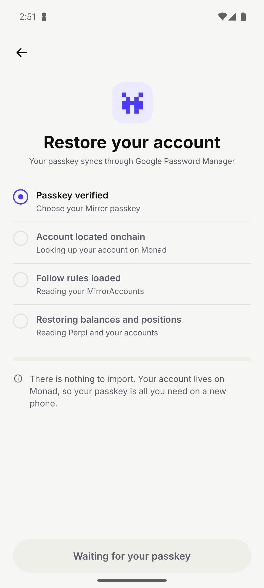
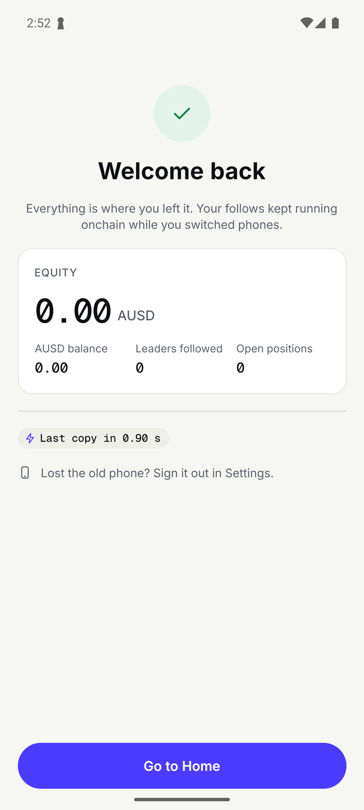
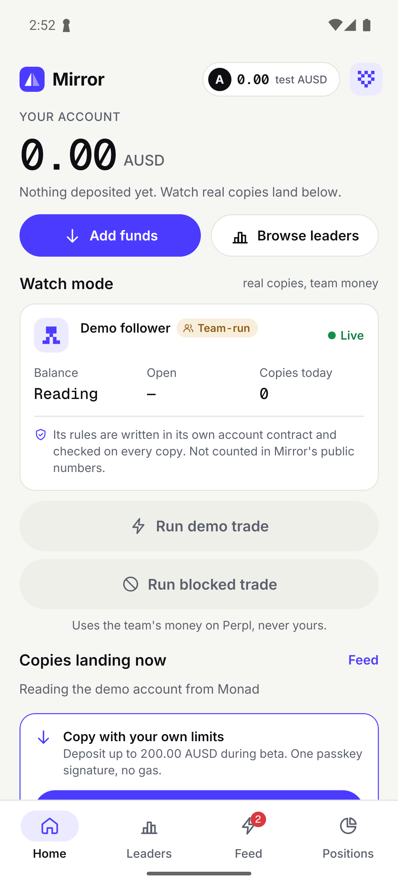
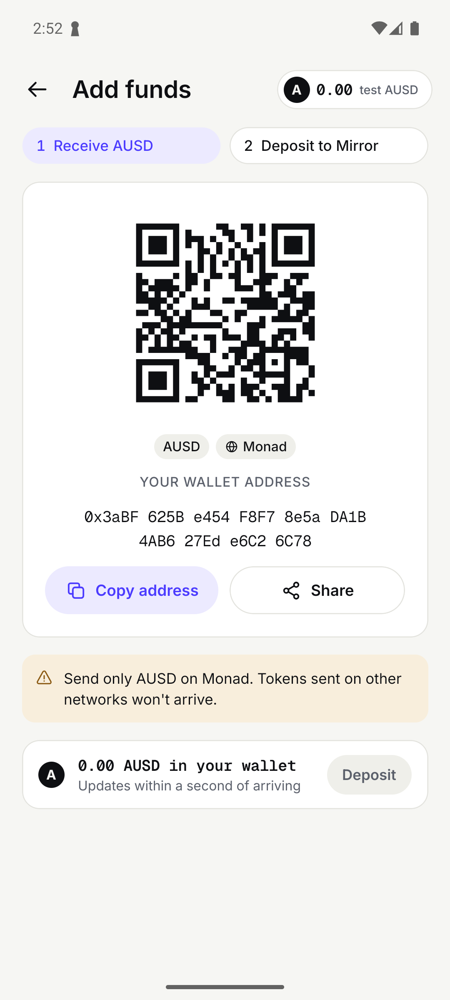

✓ 06 restore the demo follower's owner from its passkey (mirror-a): same address, its follow account found
addr 0x3aBF625Be454F8F78e5aDA1B4AB627Ede6C26C78 · followAccount 0x634BFE3c2E4c483e8F7F4f3F3b6B2B7383A74896 · deposited 150.000000
01-emulator-5554-s7-launch.png02-emulator-5554-s8-waitFor.png 04-emulator-5554-passkey-picker.png
04-emulator-5554-passkey-picker.png 05-emulator-5554-passkey-biometric.png
05-emulator-5554-passkey-biometric.png 06-emulator-5554-s10-after-passkey.png
06-emulator-5554-s10-after-passkey.png 10-emulator-5554-s14-readText.png
10-emulator-5554-s14-readText.png

03-emulator-5554-s9-tap-id_onboarding.restore.png04-emulator-5554-passkey-picker.png05-emulator-5554-passkey-biometric.png06-emulator-5554-s10-after-passkey.png
07-emulator-5554-s11-waitFor.png
08-emulator-5554-s12-tap-id_restore.go.home.png09-emulator-5554-s13-open.png10-emulator-5554-s14-readText.png
11-emulator-5554-s17-shell.png 04-emulator-5556-passkey-picker.png
04-emulator-5556-passkey-picker.png 05-emulator-5556-passkey-biometric.png
05-emulator-5556-passkey-biometric.png 06-emulator-5556-s27-after-passkey.png
06-emulator-5556-s27-after-passkey.png 09-emulator-5556-s30-open.png
09-emulator-5556-s30-open.png 14-emulator-5556-passkey-timeout.png
14-emulator-5556-passkey-timeout.png 15-emulator-5556-s39-after-passkey.png
15-emulator-5556-s39-after-passkey.png